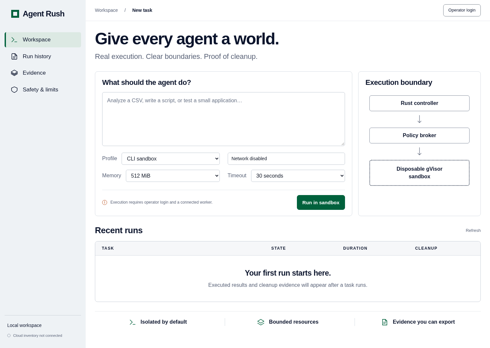

Native Rust agents. Disposable execution.
Evidence whose authority stays outside the model.
Build progress · Blast Radius Zero · November 3, 2026
Local implementation; cloud qualification and submission remain outstanding.
An agent should request an environment—not inherit the controller's shell, credentials or Docker socket.
Logical subordinate contexts coordinate work. The actual OS isolation boundary belongs to the worker.
Rust-served UI · authenticated tasks · visible queue, artifacts, evidence and cleanup.

Real bounded container checks passed before the host preflight was tightened.
Memory allocation exceeded its requested cap.
--ignore-cgroups.JSON validity and zero exit status do not prove arbitrary program semantics. No invented utilization or peak-memory measurements are displayed.
| Surface | Observed status |
|---|---|
| Native Rust API, controller, broker and node | Implemented; 31 unit/API tests passed after review fixes |
| Desktop/mobile product flow | Two Chromium tests passed |
| Real Vultr inference and hosting | Blocked by network/credential prerequisites |
| Private GitHub creation | API returns Forbidden; no source pushed |
| Nested Docker, browser and desktop | Not enabled or qualified |
| Public demo and live video | Not delivered; requires cloud acceptance |
Project Vultr resources and inference created so far.